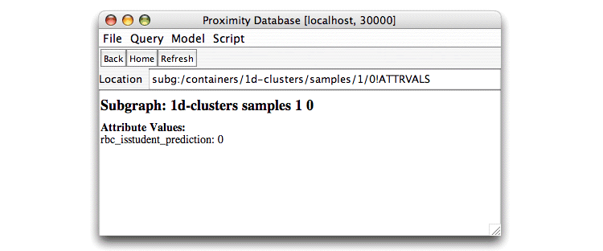

The relational Bayesian classifier (RBC) is a simple Bayesian classification algorithm adapted to the context of relational data [Neville, Jensen and Gallagher, 2003]. Like many classification systems, the RBC is trained on one set of instances and then applied to (or tested on) another. Because the RBC operates on relational data, the training and test sets are sets of subgraphs, defined by a container in Proximity. Each subgraph in the container is assumed to contain one target item (the core item) to be classified. Attributes and structural characteristics of the target item, of the other objects and links in the subgraph, and of the subgraph itself can all be used by the model in classifying the target item. Because these instances preserve the relational structure of the data, the model can exploit the connections among objects to improve classification accuracy.
In the example below, we want to predict whether or not a web page is a student page, that is, whether the value of its isStudent attribute is “1”. Each input subgraph consists of a target web page and all objects (also web pages) connected to it, including both links to and links from the target page. The following script learns an RBC on one of the samples we created in Exercise 6.4, then applies the RBC to the other sample to evaluate the its predictions.
This section describes the script found in
$PROX_HOME/doc/user/tutorial/examples/run-1d-clusters-rbc.py.
Import the necessary class definitions.
from kdl.prox.model2.common.sources import * from kdl.prox.model2.rbc import RBC
We use the samples created in Exercise 6.4 as our training and test sets. Make sample “0” the training set and sample “1” the test set.
trainContainer = prox.getContainer("1d-clusters/samples/0")
testContainer = prox.getContainer("1d-clusters/samples/1")
First we identify the core item, the database entity whose label (attribute value) we want to predict. In this case, we want to predict the label for the central object in our 1d-clusters subgraphs. This object was named “core_page” in the query that generated these subgraphs, and thus also in the resulting subgraphs.
coreItemName = 'core_page'
Next we specify the name of the attribute we want to predict (the class label). Our model predicts whether the object in question is a student web page. We use the boolean attribute isStudent to identify whether or not a page belongs to a student. The RBC model requires that the predicted attribute be discrete.
attrToPredict = 'isStudent'
We create an AttributeSource
instance to represent the
information about the class label. This attribute source specifies the
item in the subgraph that we want to label
(core_page) and the name of the attribute
that we want to predict (isStudent).
classLabel = AttributeSource(coreItemName, attrToPredict)
Next, we specify the set of sources to use in learning the model. Recall that sources can be attributes on any of the objects or links in the input subgraph including attributes on the core item, attributes of links connecting to the core item, or attributes of objects linked to the core item. In principle, we can extend this to use attributes on objects and links multiple “hops” away from the core object, provided that such items are included in the subgraphs that the model will use. In this example, because the subgraphs only extend a single hop from the core object, we are limited to attributes of objects of the core object and of objects and links directly connected to that core object. Sources can also include structural characteristics of the subgraph or attributes on the subgraph itself, although neither of these types of sources are used in this example. See Exercise 7.2 for an example of using the degree of an object (a structural characteristic) as a source.
Each source is specified as an instance of AttributeSource.
Each AttributeSource provides the name of an item (object or link)
from the input subgraphs and the attribute whose values will be
evaluated for their predictive value to the model.
We provide the set of sources as a Python list.
inputSources = [ \
AttributeSource('core_page', 'url_server_info'), \
AttributeSource('core_page', 'url_hierarchy1b'), \
AttributeSource('linked_from_page', 'url_server_info'), \
AttributeSource('linked_from_page', 'url_hierarchy1b'), \
AttributeSource('linked_from_page', 'page_num_outlinks'), \
AttributeSource('linked_from_page', 'page_num_inlinks'), \
AttributeSource('linked_to_page', 'url_server_info'), \
AttributeSource('linked_to_page', 'url_hierarchy1b'), \
AttributeSource('linked_to_page', 'page_num_outlinks'), \
AttributeSource('linked_to_page', 'page_num_inlinks'), \
AttributeSource('linked_to', 'link_tag'), \
AttributeSource('linked_from', 'link_tag')]
Begin the modeling portion of the script by
instantiating the model.
Instantiation is a simple RBC constructor call.
print "Beginning modeling section" print "Instantiating model..." rbc = RBC()
Train (learn) the model on the training set.
print "Learning model..." rbc.learn(trainContainer, classLabel, inputSources)
Write the trained model to an XML file. The file is written to the current
working directory, which is
$PROX_HOME if you are following the tutorial.
xmlFileName = 'ProxWebKB_RBC.xml' rbc.save(xmlFileName) print "RBC written to ", xmlFileName
You can read in the XML file at a later time to apply the model to other data sets having the same structure and features without having to retrain the model.
Apply the model to the test set.
print "Applying model..." predictions = rbc.apply(testContainer)
Applying the learned model returns a Predictions
instance that stores the predicted class labels. To save these predictions,
we store the predicted values as attributes on the subgraphs. The
savePredictions()
method silently overwrites any existing values for
this subgraph attribute.
print "Writing predictions..." rbcAttrName = "rbc_isstudent_prediction" predictions.savePredictions(testContainer.getSubgraphAttrs(), rbcAttrName)
Finally, we evaluate the model’s results. The Predictions class
provides several methods for calculating the error of the predictions,
but to use them, we have to first tell the predictions instance where
to find the true values for the class labels. The true values
are stored in the isStudent
attribute on the core items in the test container’s subgraphs.
predictions.setTrueLabels(testContainer, classLabel)
Proximity provides several built-in evaluation functions. Accuracy measures the percentage of test instances correctly classified by the model. Because accuracy requires knowing the correct prior distribution of instances in the population and does not consider that false positive and false negative errors may entail widely different costs, other evaluation measures, such as area under the ROC curve, are often more useful. Area under the ROC (receiver operating characteristic) curve [Provost, Fawcett and Kohavi, 1998] provides a method of evaluating the accuracy of a ranking of all the test instances according to their estimated probability, letting you compare one model’s performance against another’s, independent of error cost and without knowing the prior class distribution. Accuracy and area under the ROC curve approach 1.0 as the results improve; a value of 0.5 for area under the ROC curve indicates random performance. Conditional log likelihood is less intuitive and useful only for relative comparison of comparable entities, with higher values signifying better performance.
print "Computing accuracy (ACC)..." acc = (1 - predictions.getZeroOneLoss())
Computing area under the ROC curve requires a binary classification problem. We identify the positive instances and group all other class values into the negative instances. In this example, student pages (pages with isStudent = 1) are positive instances.
print "Computing area under ROC curve (AUC)..."
auc = predictions.getAUC("1")
print "Computing conditional likelihood (CLL)..."
cll = predictions.getConditionalLogLikelihood()
Finally, print a summary of the evaluation results.
print "RBC results:" print " ACC: ", str(acc) print " AUC: ", str(auc) print " CLL: ", str(cll)
Exercise 7.1. Learning and applying the relational Bayesian classifier model:
This script requires entities created in Exercise 5.7, Exercise 6.4 and Exercise 6.5. You must have completed these exercises before running the script in the current exercise.
Before beginning, make sure that you are serving the ProxWebKB database using Mserver. Start the Proximity Database Browser if it is not already running.
From the Script menu, choose Run Script. Proximity displays the Open dialog.
Navigate to the $PROX_HOME/doc/user/tutorial/examples directory and
choose run-1d-clusters-rbc.py.
Click Open.
Proximity opens a window to show you any output from the script along with a trace of the script execution. Your output should look similar to the following (leading information showing elapsed time and execution thread has been omitted from the trace for brevity):
Status: starting running script: /proximity/doc/user/tutorial/examples/run-1d-clusters-rbc.py Beginning modeling section Instantiating model... Inducing model... INFO kdl.prox.model2.rbc.RBC - starting to induce model... INFO kdl.prox.model2.rbc.RBC - updating model with [core_page.url_server_info]... INFO kdl.prox.model2.rbc.RBC - updating model with [core_page.url_hierarchy1b]... INFO kdl.prox.model2.rbc.RBC - updating model with [linked_from_page.url_server_info]... INFO kdl.prox.model2.rbc.RBC - updating model with [linked_from_page.url_hierarchy1b]... INFO kdl.prox.model2.rbc.RBC - updating model with [linked_from_page.page_num_outlinks]... INFO kdl.prox.model2.rbc.RBC - updating model with [linked_from_page.page_num_inlinks]... INFO kdl.prox.model2.rbc.RBC - updating model with [linked_to_page.url_server_info]... INFO kdl.prox.model2.rbc.RBC - updating model with [linked_to_page.url_hierarchy1b]... INFO kdl.prox.model2.rbc.RBC - updating model with [linked_to_page.page_num_outlinks]... INFO kdl.prox.model2.rbc.RBC - updating model with [linked_to_page.page_num_inlinks]... INFO kdl.prox.model2.rbc.RBC - updating model with [linked_to.link_tag]... INFO kdl.prox.model2.rbc.RBC - updating model with [linked_from.link_tag]... INFO kdl.prox.model2.rbc.RBC - induce model done... RBC written to ProxWebKB_RBC.xml Applying model... INFO kdl.prox.model2.rbc.RBC - starting to apply model... INFO kdl.prox.model2.rbc.RBC - apply model done... Writing predictions... Computing accuracy (ACC)... Computing area under ROC curve (AUC)... Computing conditional likelihood (CLL)... RPT results: ACC: 0.946298984034833 AUC: 0.9747484409075087 CLL: -495.61207422760805 Status: finished running script
Due to the probabilistic nature of the RBC algorithm, your results may differ slightly from that shown above. You can close this window after the script finishes.
Examine the values predicted by the RBC. The script stored the predicted values in the rbc_isstudent_prediction subgraph attribute. Recall that our testing instances are in the /1d-clusters/samples/1 container. To see these values, drill down through the container hierarchy in the Proximity Database Browser to display the list of subgraphs for this container. Click a subgraph ID, then click attrs to display the attributes for that subgraph. The example below shows the value for subgraph 0, which indicates that the model predicts that the core page for this subgraph (object 1) is not a Student page. You can compare this to the actual value of the isStudent attribute by examining the attribute values for object 1.
|  |
Recall that the RBC only makes predictions for core objects in the test container. Therefore, after learning the model, only the subgraphs in the 1d-clusters/samples/1 container have a value for the rbc_isstudent_prediction attribute.